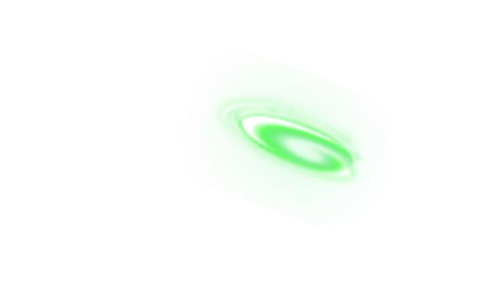
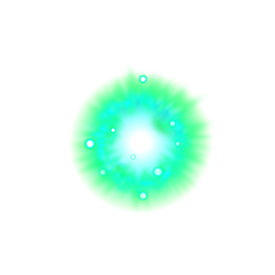
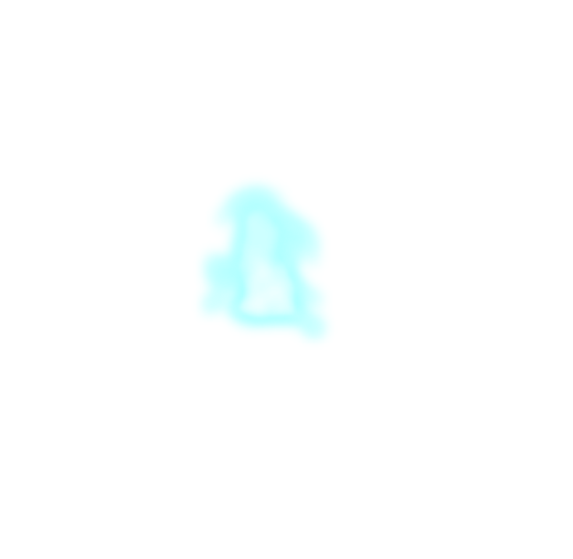
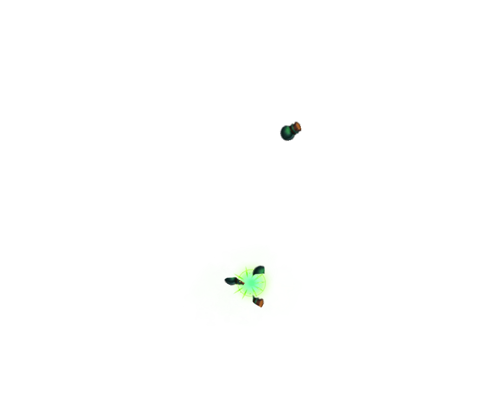
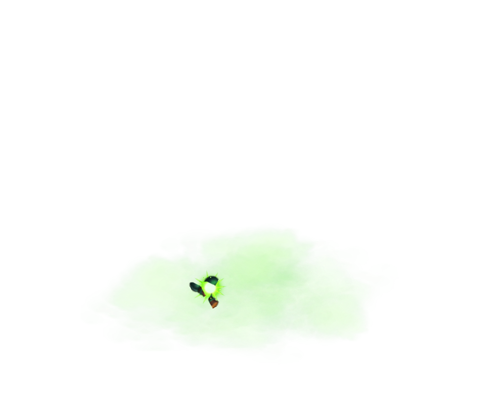

A0103 48 帧
guanyu_skill1 · guanyu_skill1-animation_
guanyu_skill1 · guanyu_skill1-animation_
guanyu_skill1 · guanyu_skill1_3-animation_
guanyu_skill2 · guanyu_skill2-animation_

guanyu_skill3 · guanyu_skill3-animation_

guanyu_skill4 · guanyu_skill4-animation_
guojia_phyattack · guojia_phyattack-animation_
guojia_skill1 · guojia_skill1-animation_
guojia_skill2 · guojia_skill2-animation_
guojia_skill4 · guojia_skill4-animation_


huatuo_phyattack · huatuo_phyattack-animation_

huatuo_phyattack · huatuo_phyattack_2-animation_
huatuo_skill1 · huatuo_skill1-animation_
huatuo_skill1 · huatuo_skill1_2-animation_


huoyoukongmingdeng_phyattack · huoyoukongmingdeng_phyattack-animation_
huoyoukongmingdeng_phyattack · huoyoukongmingdeng_phyattack_1-animation_
huoyoukongmingdeng_skill1 · huoyoukongmingdeng_skill1-animation_
